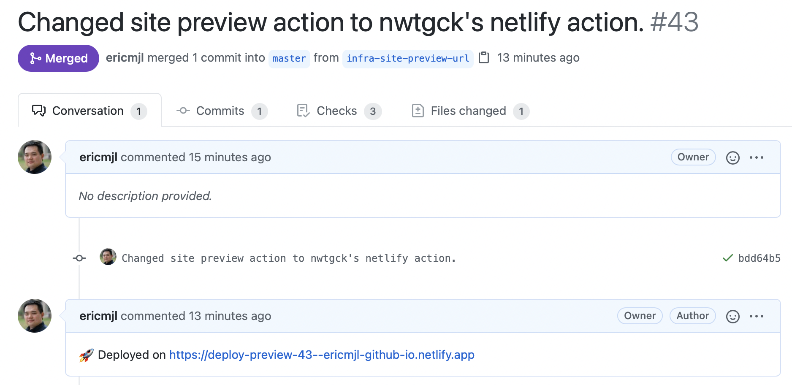

written by Eric J. Ma on 2021-04-28 | tags: netlify web development continuous integration til
Twitter is an amazing universe. I asked a question, and friends came to help.
I use Netlify to host my site previews. That said, I use GitHub actions to build the site, as site-building on Netlify has a limit of 300 minutes, while for my open source projects, I have unlimited minutes. I was curious about how to enable static site previews on Netlify with an automatic comment on the PR housing the URL. Peter Bull kindly replied, and that's when I learned that GitHub user @nwtgck created a GitHub Action that makes this easy.
Inside one of our GitHub actions configuration YAML files, we add this step:
# Taken from: https://github.com/drivendataorg/cloudpathlib/blob/master/.github/workflows/docs-preview.yml - name: Deploy site preview to Netlify uses: nwtgck/actions-netlify@v1.1 with: publish-dir: "./site" production-deploy: false github-token: ${{ secrets.GHPAGES_TOKEN }} deploy-message: "Deploy from GitHub Actions" enable-pull-request-comment: true # this is crucial! enable-commit-comment: false overwrites-pull-request-comment: true alias: deploy-preview-${{ github.event.number }} env: NETLIFY_AUTH_TOKEN: ${{ secrets.NETLIFY_AUTH_TOKEN }} NETLIFY_SITE_ID: ${{ secrets.NETLIFY_SITE_ID }} timeout-minutes: 1
The result looks something like this:

Now, it's much easier for me and collaborators to find the preview URL rather than dig through a bunch of logs to find it.
When one can query the collective intellect of the whole wide world, that's an amazing feeling.